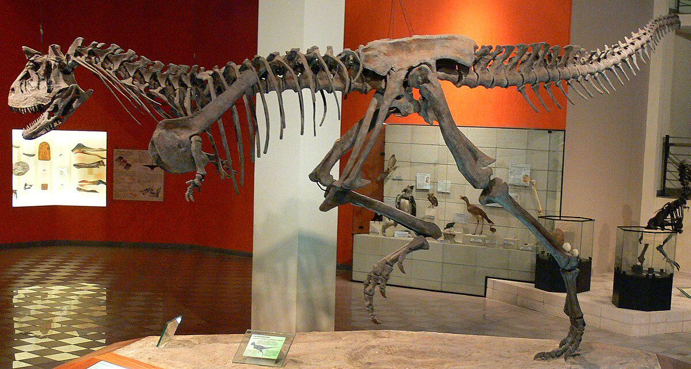
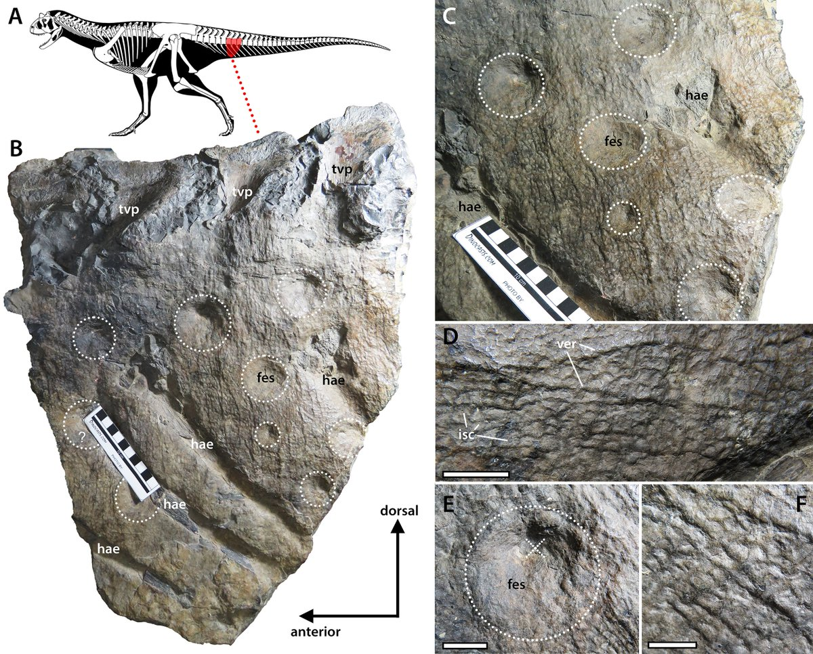
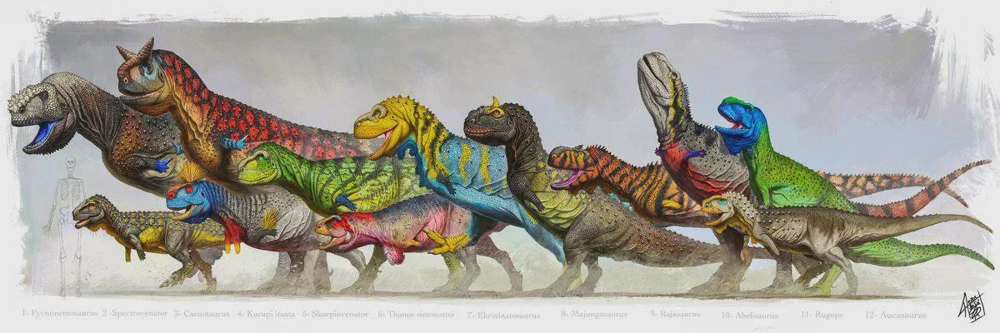

Galería de Imágenes
Colección visual del Carnotaurus: reconstrucciones artísticas, fósiles, comparativas de tamaño y escenas prehistóricas. Haz clic en cada miniatura para ver la imagen en tamaño completo.







Nota sobre las imágenes
Al hacer clic en una miniatura se abre la imagen en tamaño completo en una nueva pestaña.